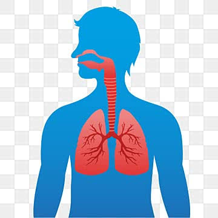

🎯 Apa yang akan kamu pelajari?
Kenal pasti laluan udara dan peranan organ pernafasan. Uji perubahan kadar pernafasan.
Fahami bagaimana bahan makanan yang tidak diperlukan disingkirkan sebagai tinja.
Manipulasikan pemboleh ubah, buat pemerhatian dan catat dapatan.
🌬️ Simulator Pernafasan Manusia
Perhatikan udara masuk dan keluar secara berterusan. Tekan bahagian organ pada gambar untuk melihat penerangan. Perhatikan animasi udara dan pengembangan paru-paru.

Paru-paru
Paru-paru mengembang ketika menarik nafas dan mengempis ketika menghembus nafas.
🔎 Pemerhatian kamu
Bandingkan keadaan rehat dengan selepas aktiviti fizikal. Apakah perubahan pada kadar pernafasan dan pergerakan paru-paru?
🫁 Laluan udara
🍎 Simulator Penyahtinjaan
Perhatikan nutrien diserap di usus kecil dan bahan yang tidak diperlukan bergerak ke usus besar → rektum → dubur sebagai tinja.
Usus kecil
Nutrien daripada makanan diserap ke dalam badan di usus kecil.
Animasi coklat menunjukkan pergerakan bahan yang menjadi tinja menuju rektum dan keluar melalui dubur.
🔎 Pemerhatian kamu
Perhatikan bola coklat bergerak dari usus kecil ke usus besar, rektum dan akhirnya keluar melalui dubur. Apakah yang berlaku kepada bahan makanan yang tidak diperlukan?
🧠 Ringkasan
Manusia menyedut udara yang mengandungi oksigen dan menghembus udara yang mengandungi lebih banyak karbon dioksida.
Penyahtinjaan ialah proses menyingkirkan tinja, iaitu bahan makanan yang tidak tercerna dan tidak diperlukan oleh badan.
🧠 Kuiz Bergambar — Cabaran Organ Manusia
Pilih jawapan berdasarkan gambar. Gambar organ sebenar/3D digunakan supaya murid lebih mudah mengenal pasti struktur organ.